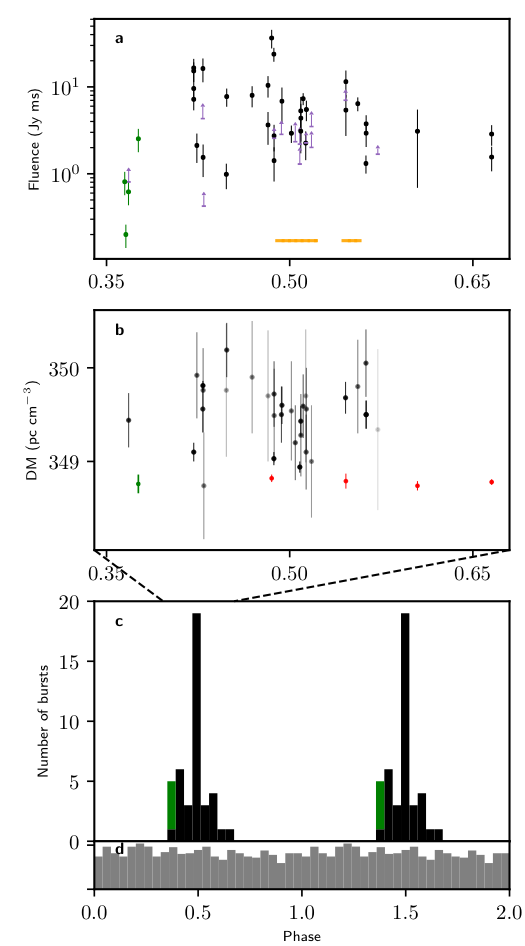
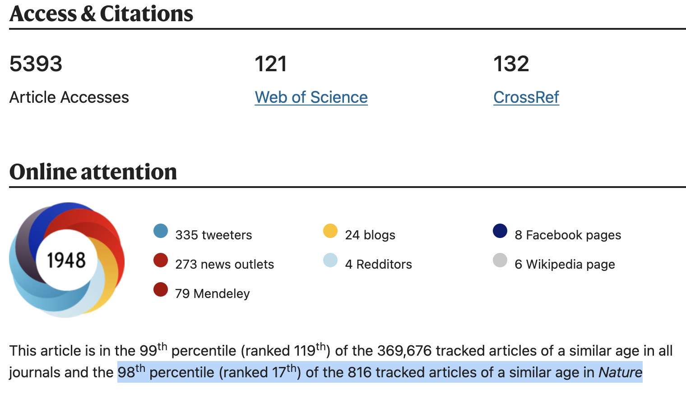
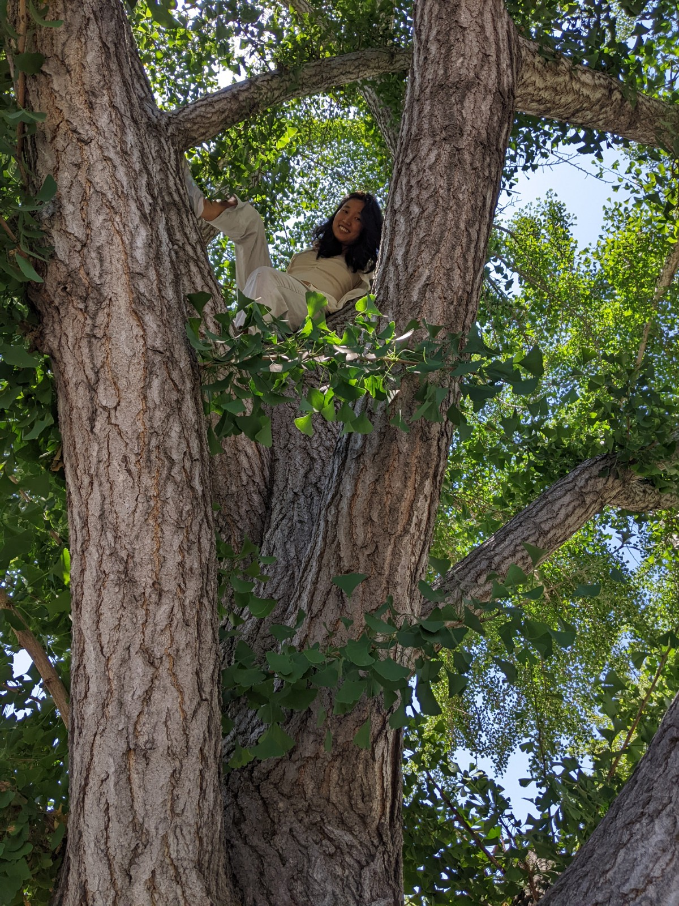
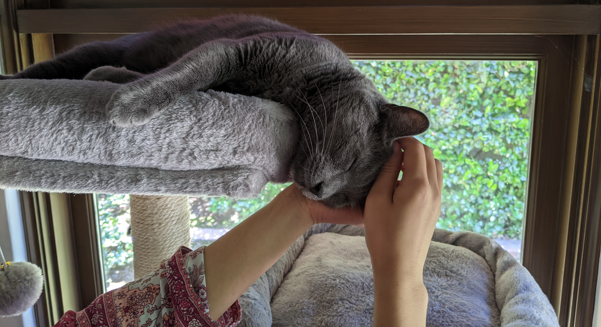

I study radio transients, such as fast radio bursts (FRBs), and pulsars.
I am fascinated by magnetic field and propagation effects.
I am interested in cosmology.


ScienceNews CNN See Here for more.

I found a 16-day periodicity of a fast radio burst (FRB). The plot above is the FRB 20180916B bursts folded at its period.(Nature 582,351, Li as corresponding author)
 We observe an extreme polarization effect, Faraday conversion, in a pulsar binary system. The circular polarization V of the pulsar changes signs when the line of sight is approaching the companion. I model the effect as the pulsar radio emission passing through the poloidal field of the companion.(arXiv:2205.07917, submitted to Nature)


dongzili@caltech.edu
I turned to astronomy after realizing the flying Kungfu masters are not real.
I love trees and kitties, although the latter may not always love me.
 Great appreciation to my parents.